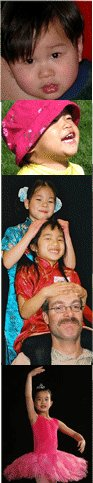

Raising a single child after adopting
by Jane A. Brown, M.S.W.
Many families wrestle with the decision as to whether to have an only-child family or to adopt again. While there is no right or wrong about any type of family that we envision or build, there are some things that adoptive families might want to consider as they make this decision or live within the type of family that they have completed. There are no studies, to speak of, to back up my thoughts regarding this issue. However, years of observing and working with families who have adopted as well as having had untold opportunities to ask adult adoptees about having grown up after adoption have shaped some of my thoughts and opinions.
Many families who adopt a first child make the decision that their family is complete. There are many reasons for this. Adoption is expensive and some cannot afford a second adoption or believe that the sacrifices that they would have to make would so impair their ability to live comfortably and provide for the child already in their family that this is not a good decision for them. Some believe that they do not have the energy or other resources to give to an additional child. Some fear bringing home another child, worried that that child could bring problems into the mix that they could not cope well with. Some families just really like having a single child to care for and believe that they can do a pretty good job meeting the needs of their child without the lack of a sibling having a negative impact on him or her.
Still, no matter what sort of family we build, most of us have an occasional worry about whether we've made the best and right choices. We would not be human if we did not wonder how our lives would have been had we made a different choice. We wonder whether this will feel as right to our child when he or she is grown as it does to us, now. Is it better for a child, especially an adopted child to grow up with a sibling? What IS the impact on children in growing up as an only?
Only gross generalizations can be made about only children and their families, since each child and each family is so very unique. However, there are some seeming commonalties amongst children who grow up as onlies. Only children and children in small families (and this IS the finding of studies) tend to have more academic success in school. They tend, to, to have a good deal of self-esteem and to engage easily and comfortably in relationships with adults. (this is where the info from studies ends). I believe that they may tend to struggle a little, sometimes, with social relationships with their peers IF they are isolated and don't have frequent and regular opportunities both in a group setting and at home. Learning to share and learning to share adult attention can be especially difficult things for them to learn because they may not be called upon as often to HAVE to share. They may also, depending on the type of family they live in, of course, be a little less flexible, since having to share attention, time, and give and take with a sibling tends to shape children who have to be more flexible and sometimes, more resilient to quick, unpredictable changes.
There are special areas to think about when an only child has come through adoption, particularly transracial/international adoption. A child who has at least one sibling who also joined the family has a base of comparison between the way that she thinks, feels, wonders and another over a lifetime. We don't get as close, inside a look at another's life and their style of living that life as we do when we share a belongingness to our family. While siblings may or may not form a close, loving relationship, the fact that they share their parent(s), home environment, material resources, etc. bears on their ability to compare their lives and thoughts with another as closely as possible. In some ways, since transracial, international adoptees already tend to experience a sense of isolation from the experiences of most others (especially non-adopted others), growing up as an only child can exacerbate that sense of isolation. "Is it NORMAL to wonder what I do, to fantasize about my birth parents, to feel as I do about China, and about Mum and Dad? Do others usually feel a sense of belonging and at times, feel that they don't quite fit exactly into their families? Would it be the same if I had not been adopted, but had been born into my family?" are typical questions. A child who grows up alone may fantasize that adoptees who have siblings feel less isolated or have someone who thinks and feels just as they do-- whether or not this is really so.
My friend, Muriel was one of two sisters (bio siblings) joined to their family through adoption. Throughout her childhood, although Muriel had no interest in talking about her history, what was known about her birth parents, or how she was cared for before coming to be adopted, her sister behaved very differently and was very interested in these things. Susan was very curious and always pestering her mother and father with questions, in Muriel's words. Her sister was intensely sad over knowing little of their birth parents and yearned to grow old enough to search, which horrified Muriel. Susan struggled through some difficult years when her anger at having been relinquished exploded outward at everyone and everything, while Muriel, at the same ages and stages, seemed to breeze easily through childhood. Even Susan's teen years were much more turbulent as she acted out some of her fantasies about her birth parents. Muriel was not very sympathetic and she and her sister were not close.
It wasn't until much later that Muriel had some understanding of her sister's earlier thoughts, questions, feelings, and behavior. Muriel and her husband adopted a young child and one night, when Muriel held little Sarah in her arms, she thought to herself "Who could ever have been able to be parted from such a lovely child?". Her next thought struck her like a truck. "Who could have been separated for a lifetime from ME?" Having had a close, if not easy relationship with her sister was helpful to her over the next few years as she began to delve into her grief and process of learning to cope with the associated feelings that brought. It was as though Susan, at an earlier stage, had helped Muriel to do some of the emotional work of grappling with having come into a family through the door of adoption that Muriel had not yet been ready to do. As Muriel worked through her thoughts, feelings, and questions, it was Susan who was most helpful to her as a guide and mentor, reassuring her that she WOULD regain her perspective and balance.
All children who join families through adoption have a certain amount of performance pressure that they grow up with. Most adult adoptees tell us that they felt a strong sense of competition with and need to try to live up to the "child who was never born" to their parents (or to the daughter/son who had not been born this time around). Only children do seem to have more performance pressure than do their peers with siblings. They are their parents' sole focus in parenting and thus, can tend to feel as though they are under the microscope, at times.
When there is more than one child in a family, the pressure gets spread out a bit more.Children may not feel as much responsibility for fulfilling their parent(s)' expectations and wishes. Each child can take turns being in the limelight or being the child out of compliance with rules, or the quiet one, and so forth. There are both positive and negative aspects of all this. Only children receive a great deal of attention and do not have to share parent(s)' time. However, this may not always be comfortable or desirable.
Parents also seem to feel more pressure to get things "just right" since they see themselves as having only one chance. They may sometimes be more anxious that their child receive all that they need and fret more intensely if they think that they may not be getting that or if their child is struggling with some behavioral or emotional stresses for a period of time. Things may seem "all good" or "all bad" depending on how their child is coping with school, friendships, leisure time, behavior, ability to communicate, etc. Parents may feel more pressure to help their child establish close friendships, get along with neighborhood children, and have a wide variety of social experiences. This is neither all to the positive or to the negative! It may make parents overprotective, doting, and overly involved in their child's life, but it may also propel them to be enormously enthusiastic, ever-ready to provide stimulating and memorable experiences, to drop everything when their child needs them in a way not otherwise possible, and to lavish an array of wonderful things on their child that they might not have time or money for, if they had more than one child.
Are there benefits for children in having a sibling who came through international/transracial adoption? There are, but as with all things in families, there is more than one way to offer the same benefits. I think that children need and deserve to know how other young adoptees think about adoption, how they sometimes feel, and that they are not alone whatever their experience is. Children need ongoing, long term friendships both with non-adopted peers and adopted peers who are close, as siblings are close to each other. Parents need to know that children who play together won't automatically have the same type of intimate discussions that would normally occur within a family, so they need to help initiate those whenever possible. That requires them to be extra attentive, to take some risks in opening discussions, and making certain that close relationships with other families grow strong and remain intact over time.
Parents need to have the courage and foresight to talk with their children about the positives and the downside of growing up in a family with only one child. This is not easy to do. We all tend to want to accentuate the positives and downplay the negatives. The danger in this is that we don't give children the opportunity to explore their feelings, get a different perspective, and to feel supported when we try not to discuss what those negatives are, fearing that our child may dwell on them. When parents have the wisdom to listen, without wanting to "fix" the problem or minimize it for the child (as in "Well, I know that sometimes you are lonely, but just think darling, you never have to have someone break or lose your toys!") then children can be free to really communicate their thoughts, feelings, and needs. If one knows what a child needs or yearns for or expects, than that can be provided in some other way. At the very least, a child can feel understood and that her feelings are valid and acceptable. Then, opportunities to compare and contrast that experience with another (a discussion with a child from a big family, for example) can happen. A child may learn that what she believes is so, is not really as she envisions it to be or that there are some things that a child with a differently configured family envies. These sorts of discussions can help a child to understand that there is no one right or best way to be part of a family. That ALL kinds of families have value.
I do think that parents who are raising an only child must pay careful attention to their own expectations, feelings, and the pressure that they could put onto a child to fulfill all their dreams. A child needs, in my opinion, a little neglect, occasionally-- time away from parents' scrutiny and indulgence.
Opportunities to make mistakes and not be the center of their parent(s)' lives is beneficial for a child-- time when their parents are too busy or too distracted and they have to figure out how to fill leisure time or cope with problems themselves. Too much of anything is overwhelming and stifling! Parents need to try to give their child some emotional distance and not burden their child with their expectations, as hard as that may. They also need to make sure that their child has plenty of interactions with peers both away from home and in their home.While parents with more than one child have this as a built-in feature of their family, parents of singles have to work a little to make sure that these happen. They might also try to help their child connect with friends who are part of a sibling group and spend some time, occasionally, talking about how this is the same and different.
We are also recognizing that young adoptees benefit tremendously from regular and ongoing contact with young adult adoptees. It is a gift to a child to have a transracially adopted babysitter or special friend to look up to and model oneself upon. Wise parents of only children will recognize that this is especially important and try to establish those connections for their child, early on.
Raising an only child or an only-adopted child is challenging, but also exciting-- just as every type of parenting is. In my opinion, it is not whether we choose to have one or a dozen children that really matters as to whether our children will grow up happy, healthy and secure. It is HOW we raise them and how we recognize and deal with the issues that are pertinent or unique to our family.
Jane A. Brown, M.S.W.
Go back to the Jane Brown archive.
Jane Brown is both an adoption social worker/educator and an adoptive & foster mother of nine children, some of whom are now grown. She lives and works in Arizona. She serves on the editorial board of Adoptive Families Magazine and writes a regular parenting column for the publication. She is the creator of Adoptive Playshops which is a series of workshops for adopted children age five+, their non-adopted siblings, and adoptive parents in which children are helped through playful, multisensory activities to explore growing up in an adoptive family and racial identity, plus develop skills for dealing with societal attitudes and beliefs about adoption and includes helping children resist and confront racism and bullying. She can be reached at: janebrown77@earthlink.net or at: (602) 690-5338.